Instalar Git en Windows
Una vez descargado el instalador, haga doble clic en él para iniciar el proceso de instalación.
Personalmente, yo recomiendo cambiar un par de opciones predeterminadas:
- que Git busque actualizaciones diariamente
- que utilice Visual Studio Code como editor.
Por desgracia, debido a cambios en el instalador de VS Code a partir de VS Code 1.26, el instalador de Git no detecta VS Code. Los programadores de Git for Windows conocen este problema (Git issue 1741: Installer: Use Visual Studio Code as Git's default editor disables "Next >" button]), pero actualmente (septiembre de 2018), el problema no ha sido corregido y al instalar Git no queda más remedio que elegir otro editor con el que pueda continuar la instalación.
Estos son los pasos del proceso de instalación:
- La primera pantalla muestra la licencia de Git (GPL 2, como el kernel Linux):
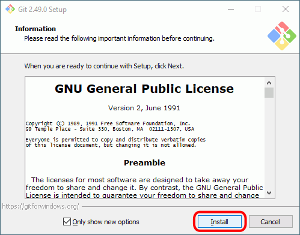
- La siguiente pantalla indica el directorio de instalación:

- La siguiente pantalla indica los componentes a instalar:
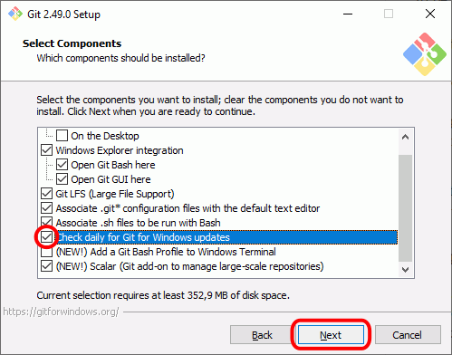
- La siguiente pantalla indica el nombre de la carpeta en el menú de Inicio:
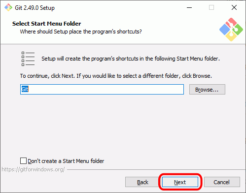
- La siguiente pantalla permite elegir el editor predeterminado. De forma predeterminada Git oferece Vim, pero el propio instalador recomienda elegir un navegador gráfico. Despliegue la caja de lista para elegir otro editor.

- Por ejemplo, uno que ofrece y detecta Git es Notepad++, otro editor de texto plano muy recomendable.:
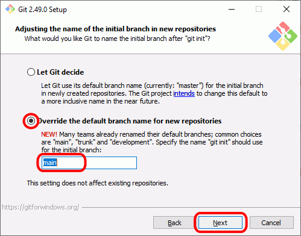
- Otro de los editores que ofrece Git es VS Code, editor que se recomienda en estos apuntes. Debido a cambios en el instalador de VS Code a partir de VS Code 1.26, el instalador de Git no detecta VS Code y el botón Next se muestra desactivado. Los programadores de Git for Windows conocen este problema (Git issue 1741: Installer: Use Visual Studio Code as Git's default editor disables "Next >" button]), pero actualmente (septiembre de 2018), el problema no ha sido corregido:
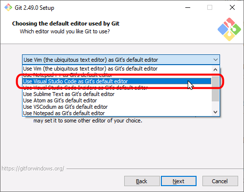
- Sin embargo, se puede conseguir seleccionar VS Code retrocediendo dos pantallas (es decir, haciendo clic dos veces en el botón Back) y avanzando de nuevo a esta misma pantalla. Curiosamente, de esta manera el botón Next sí que se podrá seleccionar y se podrá continuar la instalación:
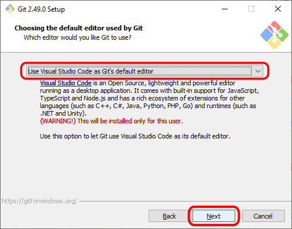
- La siguiente pantalla permite elegir el tipo de ventanas de terminal desde las que se podrá usar Git:

- La siguiente pantalla permite elegir el ejecutable de SSH:
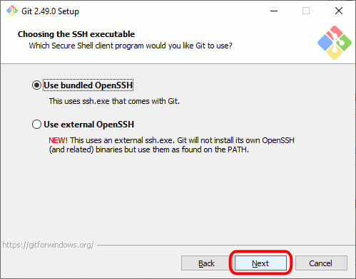
- La siguiente pantalla permite elegir la biblioteca SSL/TLS:

- La siguiente pantalla permite elegir el carácter de final de línea:

- La siguiente pantalla permite elegir el tipo de terminal bash de Git:

- La siguiente pantalla permite elegir algunas características extra:
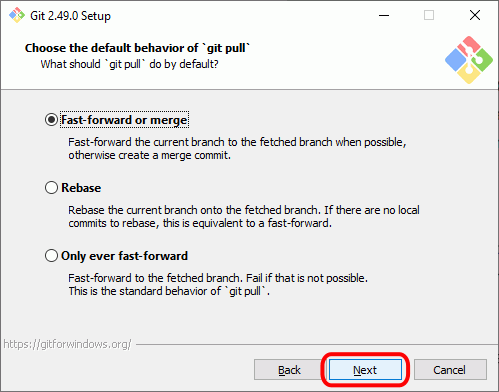
- La siguiente pantalla permite elegir algunas características experimentales:
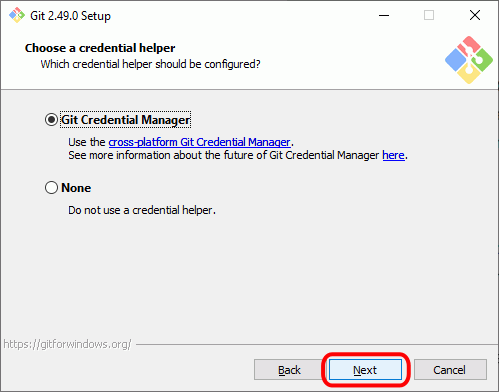
- A continuación se realizará la instalación, que durará unos segundos:
- Cuando termine la instalación se mostrará la pantalla final. Haga clic en Finish para cerrar el programa de instalación:
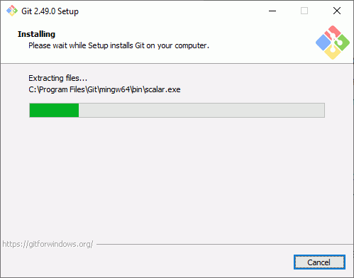
- Al cerrarse el programa de instalación, si se ha dejado marcada la casilla "View Release Notes" en la pantalla final, se mostrarán en el navegador las notas de la versión:
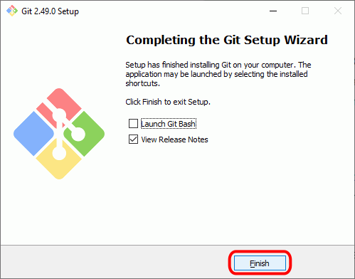